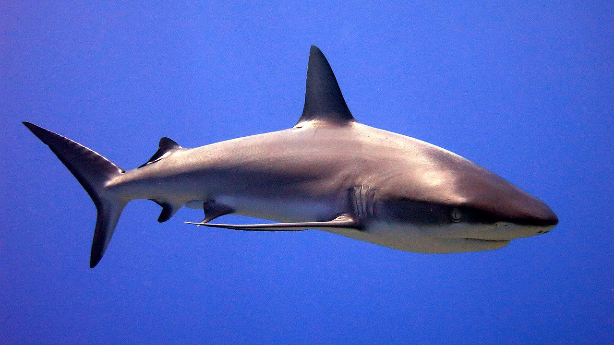
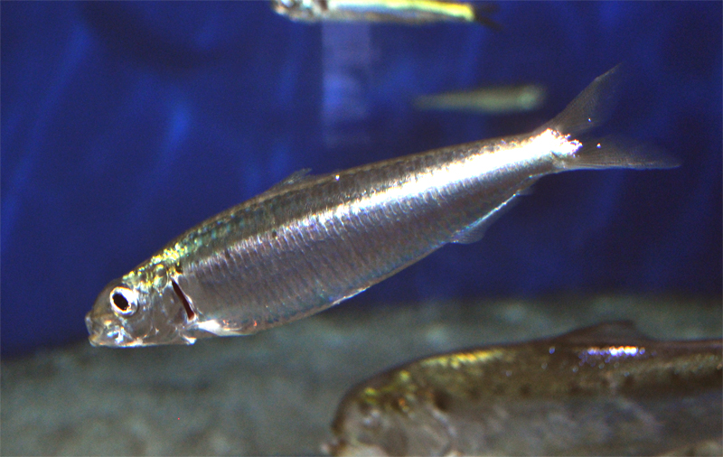

Sharks vs Sardines vs Cats
Three animals, three completely different jobs in the food web
Why this matchup?
Putting a 3-meter apex predator next to a 15-centimeter schooling fish next to a 4-kilo housecat sounds absurd — but each one occupies a famous slot in its ecosystem, and the contrast says a lot about how evolution sorts animals into roles. One hunts the ocean, one feeds it, one was hunted enough that we put it on the couch.

Shark
The original apex predator
What it does
Older than trees. ~500 living species ranging from the dwarf lanternshark (under 20 cm) to the whale shark (over 12 m). Most are mid-to-upper-trophic predators with extraordinary sensory hardware — electroreception, lateral lines, and a sense of smell tuned to parts per billion.
Strengths
- Cartilage skeleton — light, fast, regenerative teeth
- Top-down ecosystem control: removes weak/sick prey
- ~450 million years of selection pressure
- Some species cross entire oceans
Weaknesses
- Slow to mature, low reproductive rate — easy to overfish
- Sensitive to bycatch and finning
- ~1/3 of species threatened with extinction

Sardine
The currency of the ocean
What it does
A small, oily, schooling forage fish (genus Sardina and friends). Filters plankton at the bottom of the food web and turns it into dense, calorie-rich biomass that almost everything else — tuna, dolphins, gannets, whales, humans — eats.
Strengths
- Schools of millions move as a single organism
- Extraordinary biomass conversion efficiency
- Reproduces in huge numbers, fast
- One of the most sustainable proteins per kilogram
Weaknesses
- Eaten by basically everything bigger
- Boom/bust population cycles tied to ocean temperature
- Stocks collapse when fished too hard (see: California, 1940s)

Cat
The successful negotiator
What it does
A small obligate-carnivore mesopredator (Felis catus) that domesticated itself ~10,000 years ago by hunting rodents around grain stores. Hardwired to ambush, sleep 14+ hours a day, and judge you. Population today: roughly 600 million, on every continent except Antarctica.
Strengths
- Independent, self-grooming, low-maintenance
- One of the most efficient small predators on land
- Co-evolved with humans without losing its instincts
- Fits in a sunbeam
Weaknesses
- Ecological menace when feral — major driver of bird/reptile extinctions
- Prone to obesity, kidney issues, and existential indifference
- Will not come when called
Side-by-side
| Attribute | Shark | Sardine | Cat |
|---|---|---|---|
| Habitat | Open ocean & coast | Open ocean (pelagic) | Your couch |
| Diet | Fish, seals, squid, the occasional unlucky surfer | Plankton, copepods | Meat, treats, your dinner if unguarded |
| Lifespan | 20–70 yrs (Greenland shark: 250+) | 5–15 yrs | 12–18 yrs |
| Reproduction | Slow; few large young | Spawns millions of eggs | Several litters/yr if unspayed |
| Speed | Up to 70 km/h (mako) | ~10 km/h, but in formation | ~48 km/h short bursts |
| Domesticated? | Absolutely not | No, but heavily fished | Arguably — they domesticated us |
| Conservation status | Many species threatened | Stock-dependent; volatile | Least concern (overabundant) |
| Vibe | Cold, ancient, indifferent | Selfless, anonymous | Smug |
Which one for which job?
None of these is "best" — they're optimized for completely different problems. The real lesson is how three wildly different solutions all work.